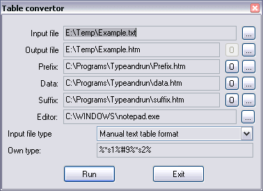

Back
~Txt2Htm
Description:
The program is intended for conversion format of text tables. I used it for conversion of the text tables into
hypertext (HTML) tables. The problem has arisen because, Excel (carrying out the given conversion) makes it is
extremely ineffective, but effective code was necessary. Besides with the help of the given program it is possible
to solve even automatic reference set (see provisional datafiles). However it can also convert some other formats.
Operation with the program:

For conversion it is necessary to write conversion script. It is text string indicating how program should treat
the format of an input file. The format of script string:
id1id2id3...
That is continuous (without blanks and other separators) list of identifiers and separators. Each unit of
this list has the following format:
%modifier and identifier without separation%separator's list through comma
Modifier - is a sequence of characters:
- number - width of a field. If is given, the program will read always from the file string(line) of
given length.
- * - means, that the columns can be divided more by(with) than one separator. The superfluous separators
are ignored.
- ! - means, that the given field can not be empty.
- ^ - means, that all characters of a field will be transformed to the upper case.
- _ - means, that all characters of a field will be transformed to lowercase. If there is a conflict with
the previous modifier - operates last.
- & - means, that the superfluous blanks in the beginning and end of a field will be remote.
Identifier starts by the first character of the English alphabet. In a name of the identifier there can be
only latin characters and digits (the character '_' is not allowed!). Other characters are ignored. The register
of value has no meaning. The name of the identifier inside the template (see further), made in сиволы of % is
substituted on its value.
Separators - characters bounding a field. For example, in text таблицых, as a rule, delimiters are the
characters of a pseudo-graphics, or blanks. It is possible to set characters as their code (for example, #9
- tabulation code, #13 - new line code), as continuous string ('continuous string'), or directly.
In direct record the special symbols (comma (,), backslash (\), quote ('), lattice (#)) should be shielded by
the character backslash (\). In continuous string it is not necessary to do so. It is necessary to select optimal
kind and use it all the time. If after any identifier is not present separators, but it has no fixed length, it
is considered, that its separators coincide with separators previous. As the majority of the tables is homogeneous,
this property strongly simplifies script recording.
Examples:
%*&s1%#9,' '%12s2%%s3%\%,'\&'%*s4%#13#10
Following given script, the program will understand, that after the first field there can be any number
of separators like blanks and tab stops, and the superfluous blanks need to be deleted, the second field has
fixed width of 12 bytes (therefore there are no separators), the third field is ended either character of %,
or combination \&, at last, fourth field is ended by one or several characters of carry of string in the
Windows format (for Unix the format will be another). For example, for a sequence
One[tab][space][tab]Two123456789Three\&Four[line carrier][line carrier]
The values of identifiers will be:
S1=One;S2=Two123456789;S3=Three;S4=Four
For the table with four columns and any separators optimal script:
%*&s1%[separator, or separators' list]%*&s2%%*&s3% and so on...
If there are identifiers identical names, subsequent are ignored.
For operation it is necessary to create three templates: the template of header, base (data) and suffix
(completing). All three templates form in that format, in what there should be an output file. The sequence
%identifier name% will be replaced with value of the identifier. For example, for the previous example
%s3% will be replaced with Three. The template of header is handled only once - it placed in the
beginning of the file, the template of the suffix placed on the end, and the template of the data placed
sequentially for each record (or string) from the input file. A maximum size of a field - 2 kilobytes. Except
for user's identifiers, in the program there are six standard identifiers:
- INNAME - complete name of an input file
- OUTNAME - name of the generating file
- PREFIX, DATA, SUFFIX - names of files of templates of header given, suffix
- AUTHOR - my name
Example of the template of header
<HTML>
<HEAD><TITLE>List %outname%</TITLE></HEAD>
<BODY>
<CENTER>
<H1>Description %inname%</H1>
<H2>This file %outname%</H2>
<br>
<TABLE BORDER=1>
<strong>
<TR>
<TH WIDTH="20%">File</TH>
<TH WIDTH="70%">Description</TH>
<TH WIDTH="10%">Open</TH>
</TR>
</strong>
Example of the template of the data
<TR>
<TH WIDTH="20%"><font size="3" face="Arial">%S1%</font></TH>
<TH WIDTH="70%"><font size="2" face="Arial">%S2%</font></TH>
<TH WIDTH="10%"><font size="3" face="Arial"><a href="%S1%">Open</a></font></TH>
</TR>
Example of the template of the suffix
</TABLE>
<br>
<hr width="75%">
<br>
<table border=1>
<tr><th width=400 colspan=2><font size="-1">Done with:</font></th></tr>
<tr><th width=100><font size="-2">Prefix:</font></th><th width=300><font size="-2">%prefix%</font></th></tr>
<tr><th width=100><font size="-2">Data:</font></th><th width=300><font size="-2">%data%</font></th></tr>
<tr><th width=100><font size="-2">Suffix:</font></th><th width=300><font size="-2">%suffix%</font></th></tr>
<tr><th width=400 colspan=2><font size="-1">Author: %Author%</font></th></tr>
</table>
</CENTER>
<body>
</html>
Conversion script:
%*s1%#9%*s2%
¬ходной файл:
| First | Red |
| Second | Green |
| Third | Blue |
| Fourth | Brown |
Open example.txt
Result:
Open example.htm
Features:
- In the program there are four standart scripts: for the standard tables (separators of a tab stops) on
three and four columns, the optimizer for text files (automatically assigns in the end the necessary character
of the end of line, so the don't need to write it yourself, and script for binary files - to write how is
written in a manual.